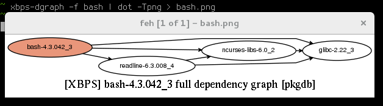

State of the

Enno Boland @Gottox | 32c3
# History
Started in 2008 as a testbed for package managment.
Juan RP is the founder and project leader.
# What's Void Linux?
* Linux Distribution
* Rolling Release
* libressl, runit, xbps
# xbps
* package manager from scratch
* signed packages
* tool to generate dependency graphs (see xbps-dgraph)
xbps-dgraph
xbps-dgraph -f bash|dot -Tpng>bash.png

# What's Void Linux? (devs)
* Github oriented
* Continous Integration (buildbot, travis)
# Why use Void Linux
* fast development
* quick updates
* easy to get involved
# The last talk...
1 active user in the audience
# The last talk...
Today?
# And other OSes?
* Arch?
# And other OSes?
* Debian? Ubuntu?
# The last year
```
# git log --since='one year ago' --oneline | wc -l
15461
```
```
# sh ./count_packages.sh
x86_64: 6233
x86_64-musl: 5517
i686: 6215 _
armv6l: 5038 \
armv6l-musl: 4428 | Cross compiled
armv7l: 5071 |
armv7l-musl: 4437 _/
```
Last year: 4500 packages / 3300 cross compiled
# Conclusion
* new kid on the block
* awesome build system
* lot of stuff happened in the last year
# Thanks
http://voidlinux.eu
[@VoidLinux](http://twitter.com/VoidLinux)
[@Gottox](http://twitter.com/Gottox)